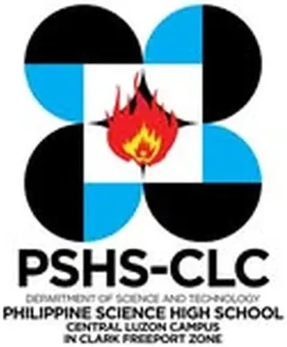

PSHS-CLC Innovation Center
Philippine Science HS – Central Luzon Campus · Region III
The PSHS-CLC Innovation Center is a fabrication laboratory (FabLab) established at the Philippine Science High School – Central Luzon Campus (PSHS-CLC) in Clark Freeport Zone, Mabalacat City, Pampanga. Operating as a Department of Trade and Industry (DTI) Shared Service Facility (SSF), the center serves PSHS-CLC students as well as MSMEs and the creative industry in Region III, providing a digital fabrication facility that bridges science education with practical product innovation and entrepreneurship.
- Category
- Fabrication Laboratory (FabLab)
- Host institution
- Philippine Science HS – Central Luzon Campus
- City
- Mabalacat, Pampanga
- Region
- Region III
- Operating status
- Operating
About the Center
The center aims to nurture creativity and innovation among students and the wider community through hands-on digital fabrication technology, with research programs anchored on project-based learning (PBL) in STEM subjects. Grade 10 and advanced students conduct independent research investigations in biology, physics, and environmental science, and use the center's tools to build and test prototypes. The center extends access to Pampanga's surrounding communities and creative industries in coordination with DTI Region III, serving as a shared innovation resource for the Clark Freeport Zone and the wider Pampanga region.
Programs & Services
- 3D Printing — Fused Deposition Modeling (FDM) 3D printing for student thesis prototypes, design projects, and MSME product prototyping
- Laser Cutting & Engraving — Precision laser-cutting for acrylic, wood, and similar materials for product design, arts, and industrial applications
- CNC Milling — Computer-controlled milling for precision parts, educational models, and custom engineering components
- Precision Milling — Fine-detail milling tools for precision fabrication work in student research and design projects
- Vinyl Cutting — Digital vinyl cutting for signage, decals, labels, and creative design outputs
- STEM Project-Based Learning — FabLab-integrated learning programs for PSHS-CLC students conducting independent research in science, technology, engineering, and mathematics
- Community & MSME Access — Open fabrication access for Pampanga MSMEs and creative industry practitioners in partnership with DTI Region III
Contact
Sources & references
- fablabs.io/labs/pshsclcinnovationcenter
- sunstar.com.ph/more-articles/dti-turns-over-fablab-equipment-to-pshs
Details are drawn from public records and the sources above, July 2026.
Startupreneur Innovation Hub · synced from the Notion catalog (July 2026) · status: published.